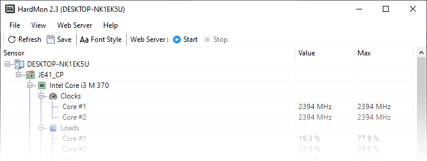

|
HardMon 2.3 – OyenX Edition is a lightweight, powerful, and modern hardware monitoring tool designed for real-time system analysis. Built with efficiency in mind, it provides accurate sensor data across CPU, GPU, memory, storage, battery, and network components in a clean and structured interface.
This edition introduces an integrated Web Server Monitoring System, allowing users to remotely access hardware statistics through a browser in real-time. Whether you are a casual user or an advanced IT enthusiast, HardMon delivers reliable performance monitoring both locally and over the network.
Download HardMon (Windows x86-x64 bit)
| |
Supported |
| Version |
Size |
Support |
Download |
Win7 |
Win8 |
Win8.1 |
Win10 |
Win11 |
| 2.3 (OyenX Edition) |
2.09 MB |
x86-x64 |
Download |
Yes |
Yes |
Yes |
Yes |
Yes |
| 2.2 (Orca Edition) |
1.66 MB |
x86-x64 |
Download |
No |
No |
No |
Yes |
Yes |
| 2.1 (Rinjani Edition) |
1.63 MB |
x86-x64 |
Download |
No |
No |
Yes |
Yes |
Yes |
| 2.0 (Summit Edition) |
1.69 MB |
x86-x64 |
Download |
Yes |
Yes |
Yes |
Yes |
No |
| 1.23 (Sillicon Edition) |
1.55 MB |
x86-x64 |
Download |
Yes |
Yes |
Yes |
Yes |
No |
| 1.20 (Dark Edition) |
1.53 MB |
x86-x64 |
Download |
Yes |
Yes |
Yes |
Yes |
No |
| 1.0 (Initial Edition) |
1.51 MB |
x86-x64 |
Download |
Yes |
Yes |
Yes |
No |
No |
Download HardMon SDK (HardMonLib.dll) .NET Library
System Requirements
- Windows operating system (Vista/7/8/8.1/10/11)
- Support both 32-bit and 64-bi

Key Features
- Real-Time Sensor Monitoring
- Continuously tracks temperature, voltage, usage, fan speed, power, and battery health with high accuracy.
- Structured & Categorized Display
- Sensors are grouped by hardware and category for maximum readability using an expandable tree layout.
- Integrated Web Server (NEW)
- Monitor your system remotely via browser using local network access (default port: 8080).
- Automatic Battery Report (Smart Detection)
- Generates a battery report only when a battery is detected, optimizing performance and avoiding unnecessary execution.
- Live Sensor Monitor Window
- Double-click any sensor to open a dedicated real-time monitoring window for focused tracking.
- Export Monitoring Data
- Save current sensor readings into a structured .txt file for logging or diagnostics.
- Customizable Interface
- Adjust fonts and grid styles (None, Horizontal, Vertical, Both) to match your preference.
- Manual Refresh Engine
- Reloads all hardware data and reinitializes sensors without restarting the application.
- Always-On-Top Mode
- Keep HardMon visible above all windows for continuous monitoring.
Monitoring Interface
- Sensor data is displayed with structured columns:
- Sensor – The name or label of the hardware sensor.
- Value – The current reading (e.g., temperature, usage).
- Max – The highest recorded value.
- Each hardware component is grouped logically for better readability.
- Visual icons represent each category such as CPU, GPU, RAM, battery, storage, and more.
Web Server Access (NEW)
- Start the server via menu: Web Server → Start
Default access:
Features:
Real-time monitoring via browser
Accessible across local network
Example: Monitor your PC from phone, laptop, or another device in the same network.
Hotkey
- Save/Export Monitoring data (CTRL + S)
- Change font (CTRL + F)
- Set On Top (CTRL + SHIFT + T)
- Refresh (CTRL + R)
- Show Content (F1)
Troubleshooting ?
- Battery report not generated ?
- Ensure the program is run as Administrator.
- No sensor data visible ?
- Check whether hardmonlib.dll is in the same folder as the program.
- Export fails ?
- Verify you have write permission in the selected folder.
Copyright (c) 2015 - 2026 Ari Sohandri Putra. All rights reserved.
License terms |
|